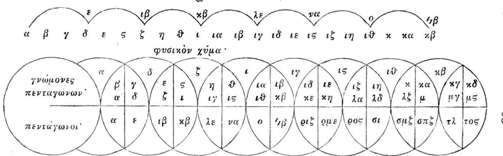
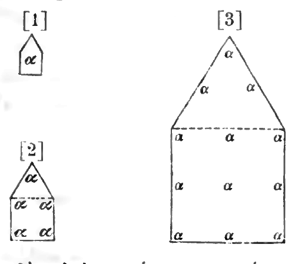

Chapter 10: Pentagonal Numbers and Gnomons Differing by Three — Greek (Hoche 1866)¶
Ἀριθμητικὴ Εἰσαγωγή, Book II, Ch. 10 (ed. R. Hoche, Teubner, 1866)
ι. Πεντάγωνος δέ ἐστιν ἀριθμὸς ὁ καὶ αὐτὸς κατὰ τὴν ἐξάπλωσιν τὴν εἰς μονάδα σχηματογραφούμενος ἐπιπέδως εἰς πενταγωνικὸν σχῆμα πάντη ἰσόπλευρον, οἷον
α, ε, ιβ, κβ, λε, να, ο
καὶ οἱ ἀνάλογοι. ἀλλʼ ἔστι τοῦ μὲν πρώτου κατʼ ἐνέργειαν, τουτέστι τοῦ ε ἑκάστη πλευρὰ δυάς, μονὰς μὲν γὰρ τοῦ δυνάμει πρωτίστου πενταγώνου ὑπάρχει τοῦ ἑνός, τοῦ δὲ τῶν ἐκκειμένων δευτέρου τοῦ ιβ πλευρὰ τριὰς καὶ τοῦ μετʼ αὐτὸν τοῦ κβ τετρὰς καὶ τοῦ ἑξῆς τοῦ λε πεντὰς καὶ ἑξὰς τοῦ ἐπὶ τούτῳ τοῦ να καὶ ἀεὶ οὕτως· καθόλου γὰρ τοσούτων μονάδων ἡ πλευρά ἐστιν, ὅσοιπερ εἰς τὴν αὐτοῦ σύστασιν συνεσωρεύθησαν ἀριθμοὶ ἐκλεγέντες ἐκ τοῦ κατὰ φύσιν στοιχηδὸν ἐκκειμένου ἀριθμητικοῦ χύματος· παραπλησίως γὰρ καὶ ὁμοιοτρόπως ἐπισωρεύονται ἀλλήλοις εἰς πενταγώνου γένεσιν οἱ ἀπὸ μονάδος δύο διαλείποντες ἐφʼ ὁσονοῦν, τουτέστιν οἱ τριάδι ἀλλήλων ὑπερέχοντες· ἡ μὲν μονὰς δυνάμει πρῶτος καὶ σχηματογραφεῖται οὕτως, ὁ δὲ ε δεύτερος ἐκ τοῦ α καὶ δ συντεθέντων σχηματογραφούμενος καὶ αὐτὸς οὕτως, ὁ δὲ ιβ ὁ τρίτος
f. 0111 · p. 93



ἔκ τε τῶν δύο προτέρων καὶ τοῦ ζ ἐπισωρευθέντος αὐτοῖς, ἵνα καὶ αὐτὸς τριάδα πλευρὰν σχῇ, ὡς τριῶν συντεθέντων εἰς τὴν αὐτοῦ σύστασιν, ὡς καὶ ὁ πρὸ αὐτοῦ ὁ ε δυάδα πλευρὰν εἶχεν ἐκ δύο συντεθείς, ἡ δὲ σχηματογραφία αὐτοῦ τοιαύτη ἐστίν·
[1] [2] [3]
α α α
α α α α
α α α α α
α α α
α α α
οἱ δὲ ἐπὶ τούτοις γενήσονται καθεξῆς προςσωρευομένων τῶν κατὰ τριάδος ὑπεροχὴν εὐτάκτων μετὰ τὴν ἑβδομάδα. ὄντων, οἷον τοῦ
ι, ιγ, ιϚ, ιθ, κβ, κε
καὶ ἐπʼ ἄπειρον· ἔσονται γὰρ
κβ, λε, να, ο, Ϟβ, ριζ
καὶ τοῦτο μέχρι παντός.